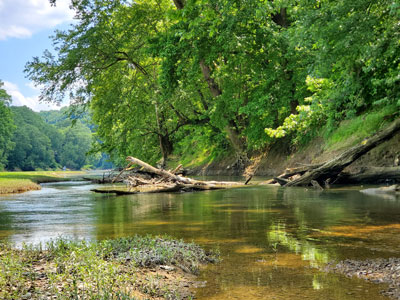
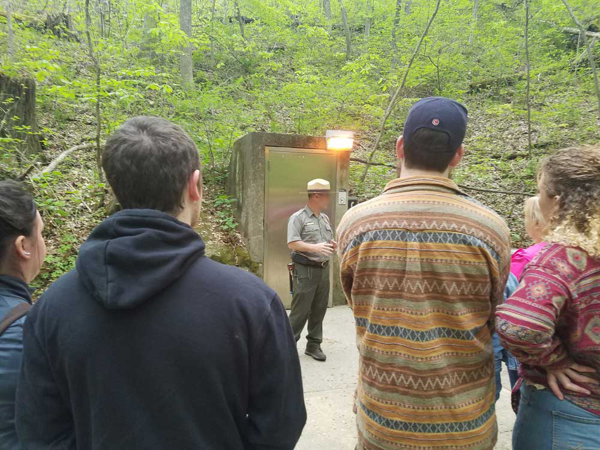
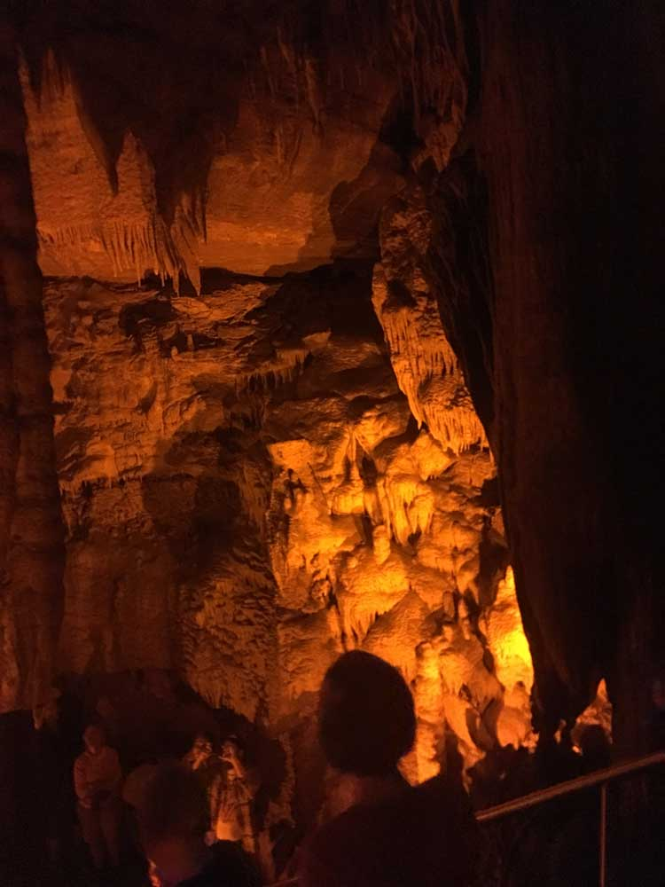
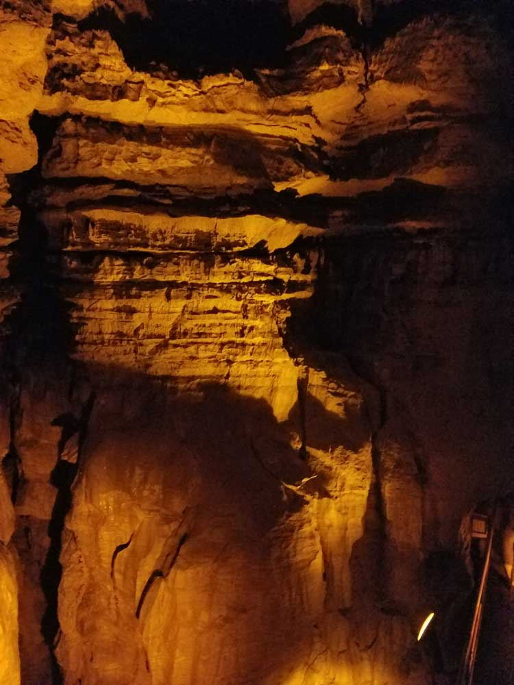

World's longest known cave system with more than 400 miles (640 km) of surveyed passageways
General Information
Cave tours run from 9am to 3:30pm
Pets are allowed on all surface trails in the park
From Nashville (88mi) Follow I-65 N to KY-255/Mammoth Cave Pkwy in Park City. Take exit 48 from I-65 N. Follow KY-255/Mammoth Cave Pkwy to KY-70 W in Edmonson County
Overview
Mammoth Cave National Park in south-central Kentucky protects the longest known cave system in the world, with more than 420 miles of surveyed passageways, nearly twice as long as the next longest. Beneath rolling forests and the Green River, the cave includes huge rooms, deep pits, narrow canyons, and rare formations of gypsum and stone. It has been a visitor attraction for more than 200 years, and its name comes from its size. The park was designated a UNESCO World Heritage Site in 1981 and an International Biosphere Reserve in 1990.
Mammoth Cave was established as a national park in 1941, after years of local efforts to protect it. People come to take a ranger-guided cave tour, which is the centerpiece of most visits and ranges from easy walks to crawling through tight passages, and to explore the park's forests, rivers, and hiking trails. The park is easy to reach from I-65, which makes it a popular stop between Nashville and Louisville, and it is a favorite of families.
Park Sections
The park is divided by the Green River into two parts. The area south of the river holds the visitor center, the three main cave entrances (the Historic Entrance, New Entrance, and Frozen Niagara Entrance), the Lodge at Mammoth Cave, and the campground, and it is where most visitors spend their time. The area north of the river is more remote and quiet, with miles of trails, horseback riding, and the Maple Springs area. The Green River Ferry crosses the river to connect the two parts, and Houchin Ferry offers a second crossing farther west. The park also includes the Nolin River area on its western side.
Sightseeing and Exploring the Park
Above ground, the park has scenic drives along Mammoth Cave Parkway, the Green River Ferry Road, and the Flint Ridge Road. The Green River Ferry is a short, free ride across the Green River and one of the most enjoyable things to do. Sights include the Historic Entrance, the Cedar Sink sinkhole, Sloans Crossing Pond, and the river overlooks. The most popular experience in the park is underground, where tours cover different parts of the cave. Many visitors combine a tour with a walk to the cave's historic entrance and a ride across the river.
Hiking
The park has about 85 miles of hiking trails, many on the quieter north side of the river. Easy hikes include the Heritage Trail (a paved loop), the Echo River Spring Trail, and the Green River Bluffs Trail. The Cedar Sink Trail (about 2 miles) leads to a large sinkhole, and the Sloans Crossing Trail and the White Oak Trail are longer, moderate routes. The Mammoth Cave Railroad Bike & Hike Trail follows an old railroad bed for about 9 miles. Backcountry camping is allowed with a permit. Wear sturdy shoes, since trails can be muddy, and carry water in summer.
Other Activities
Cave tours are the main attraction, with options that include the Historic Tour, Domes and Dripstones, the Frozen Niagara Tour, the lantern-lit Violet City Lantern Tour, and strenuous off-trail adventures such as the Wild Cave Tour; see the table below. Above ground, visitors can canoe or kayak the Green and Nolin Rivers, fish, horseback ride, bicycle, camp, and attend ranger programs. Nearby cave attractions include Hidden River Cave in Horse Cave and Diamond Caverns. The Mammoth Cave Wildlife Museum in Cave City is a small private museum.
Flora and Wildlife
The park above ground is a hardwood forest of oak and hickory with redbud and dogwood in spring and fall color in October. White-tailed deer, wild turkeys, raccoons, coyotes, and many songbirds live on the surface, and the Green River supports a rich diversity of mussels and fish. The cave itself is home to unusual animals adapted to darkness, such as eyeless cave fish, cave crickets, and cave shrimp, as well as bats, including the endangered Indiana bat and gray bat. Wildlife viewing is on your own, and deer are often seen near the campground and visitor center at dusk.
Access
The park is in south-central Kentucky, about 90 miles south of Louisville and 90 miles north of Nashville, reached from I-65 at exit 53 (Cave City) or exit 48 (Park City). Bowling Green is about 30 miles southwest. The nearest commercial airports are in Bowling Green, Louisville, and Nashville, with Nashville and Louisville having the best service. There is no public transportation to the park. Visitors arrive by car, and reservations for tours should be made in advance in busy seasons, since the cave can be reached only on guided tours.
Seasons
The cave stays at about 54 °F year-round, so tours are comfortable in any season, with a light jacket. Summer is the busiest season, with hot and humid weather above ground and tour tickets selling out. Spring and fall are milder, with flowering trees in spring and colorful foliage in fall. Winter is cold with occasional ice and snow, but tours continue on a reduced schedule, and the park is much quieter. Flooding on the Green River can sometimes close the ferry and some trails. Check the National Park Service website for the tour schedule.
Camping and Lodging
The Lodge at Mammoth Cave is the only lodging in the park, with hotel rooms, cottages, and a restaurant near the visitor center. The park has three campgrounds, including Mammoth Cave Campground with about 111 sites near the visitor center, and backcountry camping with a permit. Outside the park, Cave City and Park City, each about 10 minutes from the visitor center, have many motels, cabins, and campgrounds. Bowling Green, about 30 minutes away, has chain hotels, and Nashville and Louisville are each about 90 minutes away.
Visitor Centers
The Mammoth Cave Visitor Center is the park's main visitor center and the starting point for most tours. It has exhibits on the cave's geology, history, and cave life, a film, a bookstore, and a ticket desk. The tours leave from the center by bus or on foot, and the cave entrances are a short walk away. Rangers are available to answer questions and recommend tours. Hours vary by season, so check the National Park Service website and make tour reservations in advance.
Popular Cave Tours
| Tour | Category | Overview |
|---|---|---|
| Historic Tour | Signature Experience | One of the park's classic tours featuring historic entrances, large passageways, and stories of early exploration. |
| Frozen Niagara Tour | Geology | Highlights spectacular cave formations, including flowstone, stalactites, and draperies. |
| Domes and Dripstones Tour | Signature Experience | Explores impressive vertical domes and beautiful dripstone formations. |
| Mammoth Passage Tour | Signature Experience | Introduces visitors to the immense size and scale of Mammoth Cave's passageways. |
| Grand Avenue Tour | Extended Adventure | A longer journey through a variety of cave environments and geological features. |
| Gothic Avenue Tour | Historic | Features historic signatures and inscriptions left by visitors during the nineteenth century. |
| Star Chamber Lantern Tour | Lantern Tour | Explores the cave using lanterns, recreating the experience of early cave visitors. |
| Violet City Lantern Tour | Lantern Tour | A deeper exploration of remote cave passages by lantern light. |
| Discovery Tour | Self-Guided | The park's self-guided option, available during select periods of the year. |
| Wild Cave Tour | Off-Trail Adventure | A physically demanding adventure involving crawling, climbing, and exploring undeveloped cave passages. |
Tour Categories
- Signature Cave Experiences – Classic tours that showcase the park's most iconic chambers and passageways.
- Historical and Lantern Tours – Focus on the cave's cultural history and early exploration using lantern light.
- Geology Tours – Highlight cave formations, rock layers, and the processes that shaped the cave system.
- Grand Journey Tours – Longer excursions that explore multiple sections of the cave in a single trip.
- Off-Trail Caving Adventures – More adventurous experiences involving crawling and navigating undeveloped cave passages.
- Accessible Experiences – Designed to provide cave access for visitors with varying mobility needs.
Pricing Overview
| Tour Type | Typical Price Range |
|---|---|
| Self-Guided Discovery Tour | Approximately $12 per adult |
| Standard Ranger-Guided Tours | Typically $20–$35 per adult |
| Extended Specialty Tours | Typically $35–$60 per adult |
| Wild Cave Tour | Approximately $79 per adult |
Most visitors choose one of the ranger-guided signature tours, which generally provide the best balance of scenery, history, and value. Adventure-focused visitors often select the Wild Cave Tour for a more immersive caving experience, while first-time visitors frequently choose the Historic Tour, Frozen Niagara Tour, or Domes and Dripstones Tour.
Recommended Tours for First-Time Visitors
- Historic Tour for the classic Mammoth Cave experience and historical significance.
- Frozen Niagara Tour for the park's most impressive cave formations.
- Domes and Dripstones Tour for a combination of geological features and scenic cave chambers.
- Mammoth Passage Tour for an introduction to the immense scale of the world's longest
This article uses material from the Wikipedia article "Mammoth Cave National Park", which is released under the Creative Commons Attribution-Share-Alike License 3.0. Additional information comes from the National Park Service Mammoth Cave National Park website.
Featured Locations

Jeff P from Berkeley, CA, USA, CC BY 2.0, via Wikimedia Commons; Image Size Adjusted
.jpg){kind=link}
Green River
Scenic river corridor popular for boating, paddling, fishing, wildlife viewing, hiking access, and ferry crossings through a landscape that supports the longest known cave system in the world.


